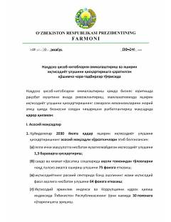

ЎРNaqdsiz ҳisob-kitoblarni ommalashtirish va yashirin iqtisodiyot ulushini qisqartirish chora-tadbirlari to'g'risida.
Mazkur ҳужжат нақдсиз ҳисоб-китобларни оммалаштириш, яширин иқтисодиёт улушини қисқартириш ва бизнес муҳитини янада ривожлантиришга қаратилган қўшимча чора-тадбирларни белгилайди. Фармонда 2030 йилга қадар асосий мақсадли кўрсаткичлар, айрим тўловларни фақат банк карталари орқали амалга ошириш ҳамда солиқ маъмуриятчилигини такомиллаштириш масалалари кўзда тутилган.